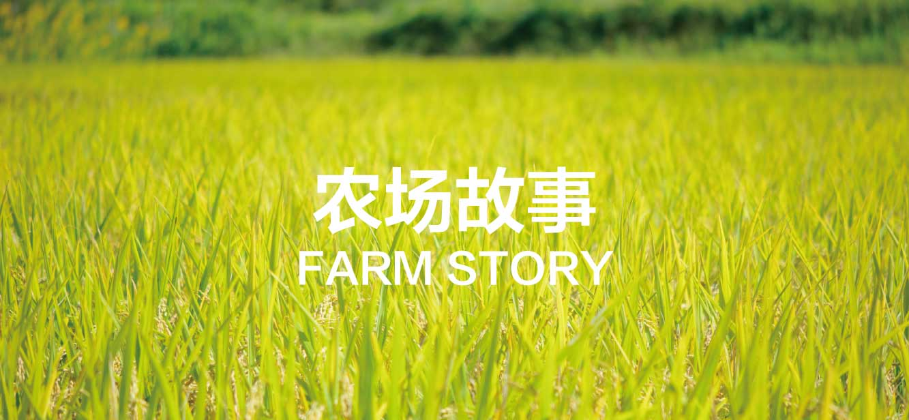

OUR STORY
- 起源依循着对儿时田园的追忆，对自然生活的探索，一个偶然的机缘，几个志同道合的年轻人来到崇明故土开创了生态农庄DreamGardens——君禾园
- 主张君禾园专注于健康与自然的生活，坚持“品质优先，真诚服务”的原则，全年提供生态种植蔬果产品的配送服务。
- 特点采用非转基因种子，用传统农耕方式驱虫除草，水源来自周边运河活水。为生活增添悠闲静思，体验大自然的魅力
君禾园核心理念
- 安心承诺君禾园专注于健康与自然的生活，坚持"品质优先，真诚服务"的原则，全年提供生态种植蔬果产品的配送服务。
- 自然蔬果君禾园专注于健康与自然的生活，坚持"品质优先，真诚服务"的原则，全年提供生态种植蔬果产品的配送服务。
- 君禾愿景君禾园专注于健康与自然的生活，坚持"品质优先，真诚服务"的原则，全年提供生态种植蔬果产品的配送服务。
- 农场实景君禾园专注于健康与自然的生活，坚持"品质优先，真诚服务"的原则，全年提供生态种植蔬果产品的配送服务。
- 种植流程君禾园专注于健康与自然的生活，坚持"品质优先，真诚服务"的原则，全年提供生态种植蔬果产品的配送服务。